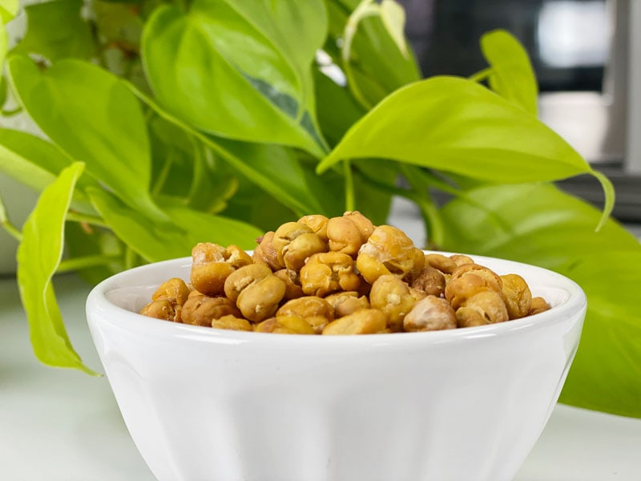
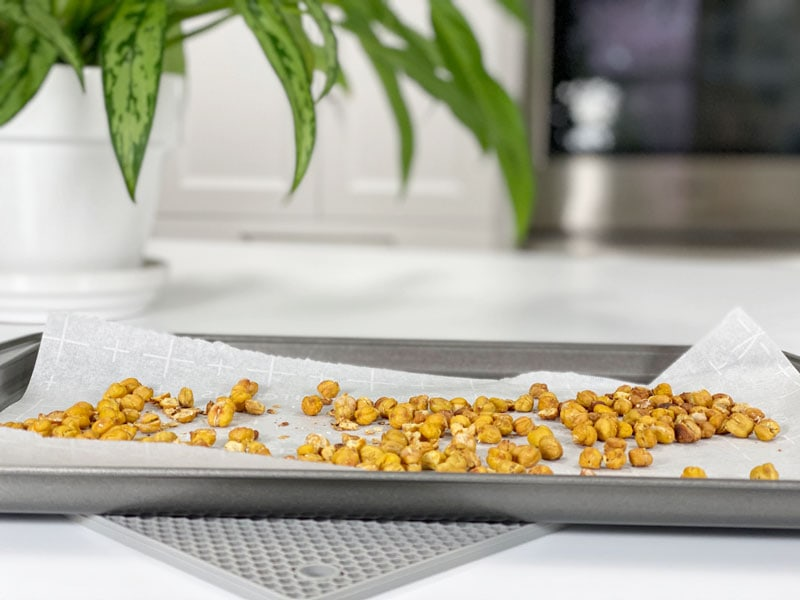

Roasted Chickpeas | Oil-Free
Do you know what these roasted chickpeas remind me of? Old maids! You know, those partially popped popcorn kernels that fail to expand to their full potential? Growing up, Mom and I spent every Friday or Saturday evening cleaning the house. After school, we would swing by K-Mart and pick up any cleaning supplies that we were running low on, as well as some snacks. If it wasn’t potato chips, it was popcorn, which was my favorite. Mom would make it with butter and salt, which was good, but it was the old maids that we playfully fought over.

I realize that there are a hundred different ways to season these, but today, I choose good ol’ sea salt, because I wanted the flavor of the roasted chickpeas to shine through. I have made this recipe several times, and I’ll be darned if they didn’t get eaten before I could snap some photos of them. All I can do is keep making them and hope to get or two for you. The sacrifices I make! So let’s talk about a few things I learned along the way.
Canned Versus Home-Cooked Chickpeas
You can use either with good results; however, cooking your own chickpeas (before roasting them) will always give you a better boost of nutrients. The key is soaking them before cooking them to help reduce the phytic acid and enzyme inhibitors, which in turn makes for better a happier digestive system and nutrition uptake. But I get it; there’s a lot of prep work involved when you just want to roast some simple chickpeas! That being the case, go ahead and use canned, but don’t skip on quality. In my experience, off brands lead to mushy chickpeas.
To Peel or Not to Peel
Oh boy, this sent me down a rabbit hole. I had NO intention–I repeat, NO intention–of peeling every little chickpea, BUT I’ll be darned if it didn’t become addictive. Was it worth the effort? That really what it boils down to, isn’t it? I do want to point out, for future reference, that it is crucial to remove the skins when making hummus for a creamy texture.
- Aesthetics – My first observation was that the unpeeled chickpeas looked cloudy, versus the peeled ones, which looked more moist and vibrant.
- Baking Process – The baked ones looked better, more evenly toasted, but again we are almost back to just aesthetics.
- Eating Experience – Although this should be the most important factor, we eat with our eyes first! Therefore, we should always do our best to present beautiful food. You deserve it. I have to admit, texture-wise, I didn’t really detect any difference, but then I was inhaling them rather quickly. Bad Amie Sue, bad.
Tips & Tricks of the Chickpea Roasting Trade
- If they end up with a grainy, soft texture, they weren’t cooked long enough.
- Every oven cooks differently, so watch carefully during baking. Some ovens run hotter or uneven. Keep track of the timing, how many times you stirred, etc. Document it for the next batch.
- The longer you keep them in storage, the softer they become.
- Make sure you dry the chickpeas thoroughly before baking to ensure maximum crispiness.
- Always line the baking sheet with parchment paper…they like to stick.
- Don’t monkey around with making just a single batch. Double or triple it! Trust me, they go fast.
Make Every Bite Count
- Use organic chickpeas if possible.
- If you use canned chickpeas, look for brands that offer BPA-free cans.
- Enjoy regular mealtimes. Create balance in your day. Seek harmony in your daily activities. Look to the rhythms in nature and discover how they relate to your life.
- If you enjoy roasted chickpeas as a snack throughout the day, eat them without distraction. Savor each “nugget,” experience the crunch factor and ponder the flavor.
-
Let’s turn the heat up in the kitchen by preheating the oven to 400 degrees (F).
- Line a baking sheet with parchment paper or a silicone sheet. Do not use foil, as it leaches into food. Set aside.
-
Place the chickpeas in a strainer and rinse them thoroughly. (keep the liquid from the can) Allow the excess water to drain away.
-
Spread the chickpeas onto one half of a dishtowel, fold the cloth over the chickpeas, and thoroughly dry by gently rubbing them with the towel.
-
Transfer to a bowl and toss with sea salt. Add more than you think you need, because some of it will naturally fall off.
-
Spread the chickpeas out evenly on the pan.
-
Bake for 45 minutes, checking and stirring every 15 minutes for even baking/browning.
-
To ensure maximum crispiness, turn off the oven, crack the door, and let them cool in there for about 1 hour. Good things come to those who wait.
- Store in an airtight container for 3 days …yeah, good luck with that. :)

© AmieSue.com